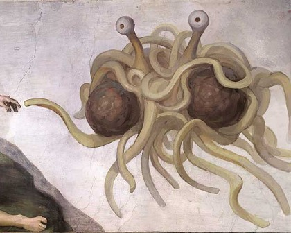

(13:57:25) jacksoncooper: hey
(14:15:31) benATthelocust: hey there
(14:15:47) jacksoncooper: so, WoW, huh?
(14:15:55) benATthelocust: (btw – there is nothing like using a restroom and thinking that a man might fall through the ceiling onto you)
(14:15:59) benATthelocust: yeah
(14:16:01) benATthelocust: WoW
(14:16:16) jacksoncooper: heh
(14:16:47) jacksoncooper: hey, that new laptop is kicking ass.
(14:17:30) benATthelocust: HOLY SHIT
(14:17:31) benATthelocust: dude
(14:17:33) benATthelocust: dude
(14:17:43) benATthelocust: as soon as i typed that thing about the ceiling
(14:17:48) benATthelocust: IT ACTUALLY FUCKING HAPPENED
(14:17:55) benATthelocust: THIS IS THE TRUTH
(14:18:02) jacksoncooper: what the hell?
(14:18:09) benATthelocust: I heard a mad clatter in the john and ran in there and there is a dude in the fucking ceiling
(14:18:18) benATthelocust: tiles and all sorts of shit where i was just sitting
(14:18:42) jacksoncooper: damn
Excuse the cursing, but I had just recently foreseen and forestalled my own peril. At that moment, cursing was and is necessary.
Update: I will have a photo later.
¨
Man – been a busy time as of late with ol’ Ben! Let’s get down to business…
First off, I’ve been embroiled in a huge project here at work to launch 6 (count them one two three four five six) websites for a company called Heatcraft in less than a month. It couldn’t have been possible without the help of Yukon Charnelius and the venerable m@.
Secondly, yes, it’s true: I have been playing World of Warcraft, and yes, it is everything that they say it is. Deep, engulfing, wide, full of content and as addictive as crack. Me? I’m a 15th-level Dwarven Paladin name of Cramfist on server Akama.
Nextly, or perhaps thirdly, ol’ Cholly and I have regularly been playing chess. Currently, the record stands at 5-4-1 with me holding a tenuous lead. Ideas are underway to create a Web 2.0 site for chess. We’ll see if it takes off…
Lastly, on the soaring front… You may remember that last year I built a sailplane over the winter. This year is much the same, but improved! I’m building a bigger version of the one I did last year with help from a new friendship with Denny @ Polecat Aeroplane Works (I did his site for him, too).
¨

TO ALL OUTLETS, BUT SPECIFICALLY THE DISCOVERY CHANNEL
I would like Mythbusters to attempt to bust something i like to call “the Stevie Wonder effect“. That is, of course, the uncontrollable urge to do the “Stevie Wonder groove-sway-thing” when listening to a Stevie Wonder song.
This would of course entail a “blind” study of humans in a private and yet comfortable atmosphere. Having friends in the book- and music-selling industries, I’d have to suggest listening stations equipped with Stevie Wonder. A “control” sample would most likely involve Streisand.
Of course, now that you, gentle reader, know of this effect, such as it is, you cannot participate in the study. Go and acquire some Wonder and attempt to influence your friends, family and co-workers. Get back to me with results.
That is all.
NOTE: This is not to be confused with the Ray effect, which is entirely un-related as it causes movies that had been shelved to miraculously come back to life after an actor wins a major award. See: Stealth.
¨

Focused readers of this site know that I enjoy “do-it-yourself” stuff, from my own software projects, to all that soaring stuff and I’ve even made my own beer (not to mention the picnic table)
In a world where most every thing we could want is ready-made and cheaply available from Wal-Mart or Target, there is a certain romantic and satisfying (to some) ideal in making your own whatever, be it a scarf, or a hat, or even a microprocessor-controlled lost-model-alarm.
Last year, I was alerted that the venerable O’Reilly publishing company was going to publish a magazine for DIYers called (aptly) MAKE. It’s a great compilation of geeky and not-so-geeky DIY projects from Kite Aerial Photography to Making Your Own Biodiesel to learning to weld! And, on a not-so-side note, for a day-to-day DIY fix, make sure to check out the MAKE:blog.
Finally, what really fueled this post was Talk of the Nation‘s interview with the editors of both MAKE and ReadyMade magazines back on December 28th, called Inside the World of “Do-It-Yourself”. Give it a listen.
¨
A few years ago, Kelly and I started donating to Goodwill on a regular basis. For a while, we didn’t keep records of what we gave, but then we decided to start claiming that stuff on our taxes (especially when we were going to owe!). We just keep tick marks of each piece that we donate, and then use a donation valuation guide to tally it all up at year-end. A note on the valuation guides: Goodwill nor the Salvation Army have an “official” guide, so use discretion. Imagine explaining claiming $6 for a ripped Def Leppard t-shirt to an IRS auditor. Each few months, we end up donating a couple of trashbags full of ill-fitting clothing and stuff that we never use. In the end, we cut our tax bill down considerably, and the Goodwill benefitted.
Kelly’s family also adopts Angel Tree children instead of exchanging gifts. Again, tax-deductible and much better than having to hem and haw over what horrifying sweater to get your gram! I helped out one year, and was given charge of a 13 year old kid and proceeded to kick out the Christmas present JAMS (literally!) It was a lot of fun.
Finally, the venerable Hunter Dixon for the last few years has been flexing his B&N muscle and buying a bunch of books for children with donations from friends. With the employee discount, he can purchase just tons of books for kids. It’s great! And to top it all off — he donated his poker winnings for December to the cause, thereby making this year the most bookalicious for needy kids. In the end this year, the official final tally was $360, allowing us to purchase 103 books. Dang. That’s awesome.
Hoo-ray for charity!
¨
The weather sages around town say that snow en-quantite’ is incoming to Louisville tomorrow, so in reaction I’ve updated my silly little exploding snowflake javascript thing called snow2. Originally written way back in 2002 (also here), it has been updated to work in today’s modern browsers. Enjoy!
¨
Kelly and I got married waaaay back on April 26th, 2002, and the next day we set off on our “Out West Road Trip” of a honeymoon. I made travelogues each day and uploaded photos at night from our hotel rooms, but had never entered them into the ‘blog until just now.
So, without further ado:
Honeymoon Day #1: Giant Ketchup and St. Louis, Gateway to the
West
Honeymoon Day #2: Beneath the arch, above the city
Honeymoon Day #3: Albino Squirreltown #1, OKC
Honeymoon Day #4: OKC to Albuquerque, NM via Amarillo, TX
Honeymoon Day #5: Wrong turns in Albuquerque, Navajo Radio, Meteor Crater and White Buffalo
Honeymoon Day #6: Grand Canyon, Tuba City, Navajo Country, Squeaking through Wolf Creek Pass
Honeymoon Day #7: The Genoa Wonder Tower Oddyssey, Kansas, Spiderman
Honeymoon Day #8: Hays, KS to St. Louis, MO
Honeymoon Day #9: Busch Stadium, Squirrelville #2, and home.
I suggest you start at the beginning and use the new, handy “Back to previous entry” and “Onward to next entry” links to get to the next day! And for more travel excitement, you can also now browse the blog by topics.
For the visual lot, there is also the Honeymoon Gallery with pictures from the entire trip (but that has been there all along).
Enjoy!
¨
…but that”s what happened to me yesterday.
Kelly and I were at Oxmoor and stopped inside Sharper Image. You know
– the kind of place where you can get a robotic calf massager, a
robotic vacuum cleaner, even a robotic… robot. In the middle of
store, prominently displayed (but outside the reach of small children)
were the Master Replicas Star Wars lightsabers!
I said “OOOH! SHINY!” and immediately went over and picked it up off of
it”s display case. I believe it was the “Darth Vader” model. There was
also a nice family of a father and like three kids “playing” with the
“Anakin” model. I hear the Dad say “uh, now kids, this ain”t for
swinging now — these are $125 a piece!” I chuckle and lapse back into
my daydream of standing on the bank of a lava-flow yelling “YOU WERE THE
CHOSEN ONE!”, with Matt Rasnake”s brother Javan standing down below w/o
3 of his appendages. Now me, I”m standing there with a goatee, sandy
blonde hair parted a little to the left gripping this thing with two
hands, just thinking one word over and over in my mind — “AWESOME
AWESOME AWESOME”. The dad then snaps my concentration and says “Hey
man — my kids think you look like Obi-Wan, you know, but like Young
Obi-Wan”. Now, this dude was black, so I was automatically thinking
“Mace! You old cock! How are you?!” but declined to say such a thing.
Nonetheless, I thanked him and his apparently awe-struck children
(judging by the looks on their faces) and went on our way. Upon
reflection I should have whipped out some great Obi-Wan scenes like
walking over to the people looking at the Roomba robo-vacuums and waving
my hand saying “these aren”t the droids you are looking for”.
So yeah, that was pretty awesome. Next time you are dragged into that
mall, I suggest you check them out.
¨

I’ve always been a passive automotive fan. I attended car shows with my dad as a youngster, and pined over a Willys Jeep and a ’57 Chevy Nomad wagon later on. I’ve owned a ’69 Volkswagen (automatic stickshift), a ’74 Ford Maverick, and an ’85 Volvo 240 (with a crank sunroof!) All of which I’ve cared for and done routine maintenance on. I enjoy driving, and I enjoy the very idea of a car as an engineering marvel, a sign of the times and as a veritable playground of the imagination.
But, these feelings have always lain a little dormant, a little behind-the-scenes. I don’t think about it every time I get into a car and my Nissan Maxima has really just been my Point-A to Point-B machine for the last 5 years. I’ve been complacent.
That is until recently. I watch Mythbusters on the Discovery Channel most Wednesdays with Kelly – and about a month ago they started showing this program called Top Gear from the BBC. Top Gear is hands-down the best review show I have ever seen. Bar-none. They review everything from super-cars to compacts to the oddballs you’ll never see. Throw in ridiculous races (Ferarri vs. Jet Plane, Pigeon vs. Citroen), an enigmatic test driver named “The Stig”, tons of spot-on British humor, hatred of caravans, and an absolute heap of passion about cars and you’ve got it. It’s unlike anything you’ve seen or will see about cars and will make you think about hitting the apex next time you go around the corner of your street. I know it has me!
You can watch a clip of Top Gear where they review the awesome Ariel Atom either
here (80 MB WMV) or here (streaming). That is the car in which host Jeremy Clarkson is riding in the image above. 0-to-60 in 2.9 seconds. To quote: “My epiglottis is filled with bees! I’ve got so much nature in my hair you could film an episode of Badger Watch in there!”
Update: Further reviews and such (including another Top Gear segment where a guy from the Top Gear magazine drives the Atom to the Artic Circle and back) here: http://www.openwheelers.co.nz/newmodel/reviews.htm.
¨

So, the Flying Spaghetti Monster craze has been brought to work by M@. For those uninitiated, the FSM is the primary deity in what has become known as Pastafarianism. It is now a bona-fide Internet craze.
But why? Why would someone create such a thing? Well – the Flying Spaghetti Monster is a parody religion made up to combat the Kansas Board of Education’s decision to give intelligent design (ID) equal time with evolution by natural selection in biology classes. Turns out that these Pastafarians believe that “Global warming, earthquakes, hurricanes, and other natural disasters are a direct consequence of the decline in numbers of pirates since the 1800s.” Considering Kansas has given the go-ahead to teach ID, they are obligated to teach FSM, right? Who needs Science when you have good storytelling and lobbyists.
You can get all the information you’ll ever need about the Church of the Flying Spaghetti Monster here:
Venganza.org, the “official” site
FSM @ the Uncyclopedia (much more comprehensive that the Wikipedia entry)
The FSM Cafepress Store
BoingBoing post
and finally… the best German headline I’ve ever seen:
Mein Gott, ein Nudelmonster! @ der Spiegel
¨